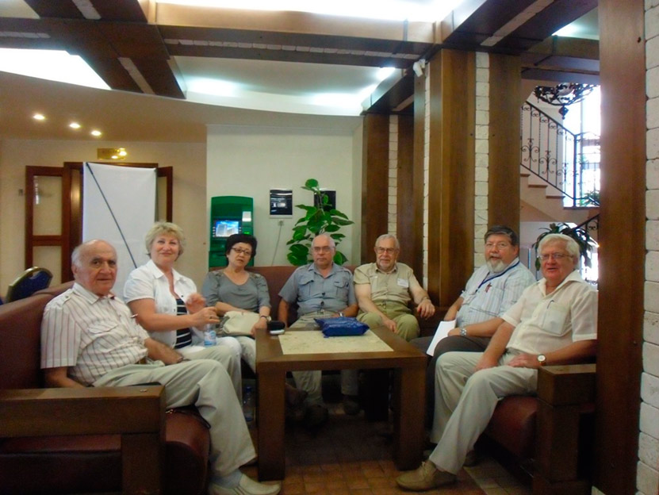

Первая конференция "Физика и Радиоэлектроника в Медицине и Экологии" прошла
в далёком 1994 году. С тех пор силами Владимирского Государственного Университета и кафедры ЭПБС
(ранее – БЭСТ), при поддержке коллег со всей страны конференция стала актуальной многоформатной
научной платформой. К этому времени ученые ВлГУ имели сформировавшееся научное направление в
этой области знаний; плодотворное сотрудничество с медиками и экологами, а также с ведущими
учеными вузовской и академической науки как России, так и зарубежных стран; тесное
взаимодействие научных исследований с учебным процессом
ФРЭМЭ'1996. На фото справа налево: директор
департамента
здравоохранения
администрации владимирской области Ильин А.И., декан радиотехнического факультета Сушкова
Л.Т., проректор по научно-исследовательской работе Коростелев В.Ф., представитель
Южно-Иллинойского университета, г.Карбондейл, США (партнер ВлГУ).
Конференция по традиции проводится раз в два года. Список организаций –
участников включает подразделения Академии наук РАН, ведущие университеты и многие другие
известные научные и учебные центры РФ и зарубежных стран.
ФРЭМЭ'2010. На фото Л. Т. Сушкова (д.т.н., ВлГУ) с
участниками конференции.
Профессора и студенты, аспиранты и научные работники, производители и медики, экологи и
радиофизики собираются на конференцию, на которой осуществляет междисциплинарный и межотраслевой
подход к изучению человека и природы на основе достижений радиофизики, радиоэлектроники,
телекоммуникационных и информационных систем и технологий применительно к проблемам медицины и
экологии среды обитания человека.
Заседания секции ФРЭМЭ'2010.
С каждой новой конференцией количество участников и тем научного диспута
постоянно растёт.
Заседания секций ФРЭМЭ'2012.
Заседания секций ФРЭМЭ'2012.
Заседания секций ФРЭМЭ'2012. На фото
справа – профессор кафедры радиотехники и радиосистем Бернюков А.К. (д.т.н.,
ВлГУ)
Заседание секции ФРЭМЭ'2012. На фото -
справа налево – в первых рядах- Чепенко В.В. (врач-реаниматолог, ОДКБ), Кузнецов
А.А. (д.т.н, ВлГУ), Батоциренова Т.Е.. (к.б.н., ВлГУ), Оленев Е.А. (д.т.н.,
ВлГУ).
Заседания секций ФРЭМЭ'2012. На переднем
плане фото слева – директор НИИЦ БТ, заведующий кафедрой "Биомедицинские
технические системы" МГТУ им. Н.Э. Баумана Игорь Николаевич Спиридонов
ФРЭМЭ'2012. Обсуждение в неформальной
обстановке. На фото слева направо - проф. И.Я. Орлов (д.т.н., почетный профессор
ННГУ), В.Ф. Фёдоров (ФГУП Главный радиочастотный центр), проф. Х. Ниманн
(д.т.н., почётный профессор ВлГУ, г. Эрланген, Германия)
Традиционно международная научная конференция «ФРЭМЭ» проводится летом
после завершения учебного процесса в вузах, что позволяет участникам полностью погрузиться в
атмосферу познания и активного обсуждения результатов научного поиска, установления новых
контактов и развития взаимодействия, сотрудничества и интеграции.
Заседание секции ФРЭМЭ'2008. На фото слева: академик
РАМН, зав. каф. нормальной физиологии РУДН, г. Москва, д.м.н. Николай Александрович
Агаджанян, который стоял у истоков организации международной научной конференции «Физика и
радиоэлектроника в медицине и экологии» - ФРЭМЭ.
В перерыве между заседаниями конференции ФРЭМЭ'2012.
На фото - слева направо - Агаджанян Н.А., Серебрякова Л.И., Батоцыренова Т.Е., Бернюков
А.К., Северин А.Е., Полушин П.А.
ФРЭМЭ - это не только заседания и доклады, но и долгожданные встречи
коллег!
Заседание секции ФРЭМЭ'2014. На фото слева направо
(передний план) - проф. А.А. Кузнецов (д.т.н. ВлГУ), проф. Л.Т.Сушкова (д.т.н., ВлГУ,
зам.председателя ФРЭМЭ, проф. А.Г. Самойлов (д.т.н., декан ФРЭМТ, ВлГУ), (задний план)
справа - проф. С.А. Филист (д.т.н.,ЮЗГУ)
28 мая 2016 г. в возрасте 67 лет ушел из
жизни доктор технических наук,
профессор Игорь Николаевич Спиридонов. Игорь Николаевич много сил отдавал руководимой им
кафедре, был инициатором создания и идеологом первой в стране учебной магистерской программы по
биометрическим технологиям идентификации личности, а также программы по методам анализа
медико-биологических изображений. Игорь Николаевич был человеком с большим жизненным опытом и
выдающимися лидерскими качествами, талантливым преподавателем, руководителем и наставником, до
конца преданным делу и наследию МГТУ им. Н.Э. Баумана, внесшим неоценимый вклад в его историю.
Важным этапом в истории конференции стал 2016 год. 12я конференция ФРЭМЭ в
2016 году впервые проводилась совместно с 12-ой Российско-германской конференцией по
биомедицинской инженерии (RGC BME 2016).
Торжественная часть заседания конференций ФРЭМЭ'2016
& РГК БМИ’2016. На фото слева направо: академик РАН Ю.В. Гуляев (ИРЭ РАН им. В.А.
Котельникова, г. Москва), проф. Л.Т. Сушкова (ВлГУ, г. Владимир), проф. Ю.М. Юлдашев (НИИ
СПбГЭТУ, г. Санкт-Петербург).
Торжественная часть заседания конференций ФРЭМЭ'2016
& РГК БМИ’2016. Награждение участников. На фото слева направо: академик РАН Ю.В. Гуляев,
проф. Ю.М. Юлдашев и проф. Зееполд (Университет Констанца, Германия).
Группа участников конференций ФРЭМЭ’2016 и РГК
БМИ’2016